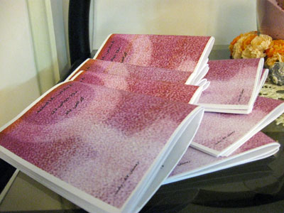

|
|

گرامی داشت 8 مارس در شهر رشت
دو شنبه19 اسفند 1387
کمپین رشت: ۸۶ سال از اولین مراسم بزرگداشت هشت مارس در شهر رشت میگذرد. در این دهها سال، فعالان زنان این شهر هرگز از بزرگداشت این روز حتی زیر چکمههای استبداد و سرکوب غفلت نکردهاند. امسال نیز فعالان زنان این شهر علیرغم همهی فشارهای امنیتی، مجموعهی متنوعی از برنامههای مختلف برای گرامیداشت این روز تدارک دیده و به اجرا گذاشتند.

گلگشت به مناسبت هشت مارس
روز جمعه ۱۶ اسفند جمعی از زنان و مردان رشت که همچون بقیهی زنان کشور برخلاف همهی کشورهای همجوار، حتی افغانستان، از امکان برگزاری مراسم روز جهانی زن در سطح خیابانهای شهر محروم بودهاند با برگزاری گلگشتی در یکی از جنگلهای اطراف شهر این روز را گرامی داشتند.

در این گلگشت که با شرکت حدود ۶۰ تن از حامیان برابری زنان و مردان برگزار شد، علاوه بر برنامههای متنوع تفریحی و اجرای نمایشهایی با موضوع وضعیت نابرابر زنان در قانون و مشکلات ناشی از آن، بحثی گروهی، با مشارکت فعالانهی حاضران، حول موضوع مشکلات ناشی از قوانین تبعیضآمیز و شیوههای عمل در برابر این قوانین و راه حلهای حل معضلات ناشی از این قوانین برگزار شد.

در حاشیهی این گلگشت محصولات کمیته هنری کمپین رشت از جمله پینها و آینههای طراحی شده توسط فعالین کمیته هنری به نفع کمپین رشت برای فروش عرضه شد. همچنین برشورهای تهیه شده توسط فعالین این شهر به مناسبت هشت مارس توزیع شد.
مراسم بزرگداشت هشت مارس
فعالین زنان رشت علاه بر گلگشت در روز ۱۶ اسفند، روز شنبه ۱۷ اسفند نیز اقدام به برگزاری مراسم بزرگداشت هشت مارس در دفتر سازمان ادوار تحکیم وحدت رشت نمودند. در این مراسم که عصر روز شنبه برگزار شد، در پنلی با حضور شهلا انتصاری، امیر یعقوبعلی و یکی از اعضای کمیته علیه خشونتهای ناموسی کردستان، هر یک از سخنرانان پس از سخنرانی به پرسشهای کتبی و شفاهی حضار پاسخ دادند.

در این مراسم نماینده کمیته علیه خشونتهای ناموسی با ارائه گزارشی از خشونتهای گاه فجیع ناموسی در کردستان به تشریح فعالیتهای این کمیته پرداخت. امیر یعقوبعلی از مردان برابریخواه فعال در جنبش زنان نیز به چرایی و ضرورت حضور مردان در جنبش زنان پرداخت و شهلا انتصاری نیز تشریح وضعیت نابرابر و به مراتب دشوارتر زنان محروم و کارگر را برای سخنرانی برگزیده بود.

توزیع بروشور
امسال نیز به سنت هر ساله بروشورهایی به مناسبت هشت مارس توسط فعالان زنان رشت در سطح شهر توزیع شد. این بروشورهای ۳۲ صفحهای که با زبانی ساده و روان به تشریح جنبههای مختلف فرودستی و تبعیض نسبت به زنان از جمله شرایط زنان خانهدار، زنان در مشاغل سخت و کم منزلت، غیبت سوالبرانگیز زنان در حوزه ورزش، زنانه شدن فقر ، مشکلات ناشی از بیحقوقی زنان در انتخاب پوشش، و شرایط نابرابر قانونی زنان و کمپین به عنوان شیوهای برای غلبه بر این نابرابری پرداخته بود، با تیراژی گسترده بین مردم شهر توزیع شد.
اهدای تابلوی چهل تکه
جمعی از فعالان حقوق زنان رشت در واکنش به قتلهای ناموسی در کردستان و مریوان، اقدام به تهیه چهل تکهای با مشارکت هنرمندان، دانشجویان و هر کسی که حساسیتهایی نسبت به این موضوع داشت، کردند. جمعآوری تکههای این تابلو که روی پارچهای به اندازه ۲۵ در ۲۵ کار شده و از کولاژ، نقاشی و روشهای دیگر برای نشان دادن و اعتراض به خشونت علیه زنان استفاده شد، چند ماه به طول انجامید و با انتخاب بعضی از آثار سرانجام در روز ۱۷ اسفند در مراسم هشت مارس، به اعضای کمیته علیه خشونتهای ناموسی به نشانهی همبستگی فعالان زنان رشت با کمیته علیه خشونتهای ناموسی تقدیم شد
مرتبط:
بزرگداشت روز هشت مارس در دانشگاه امیرکبیر
لغو نشست "زنان اکنون" در روز جهانی زن
نشست کانون هستیا اندیش و کانون مدافعان حقوق کارگر به مناسبت 8 مارس: زنانگی در تکثیر
مراسم روز جهانی زن در سنندج برگزار شد
نشست کانون آینده نگری ایران به مناسبت 8 مارس